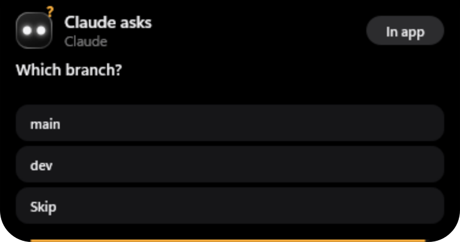
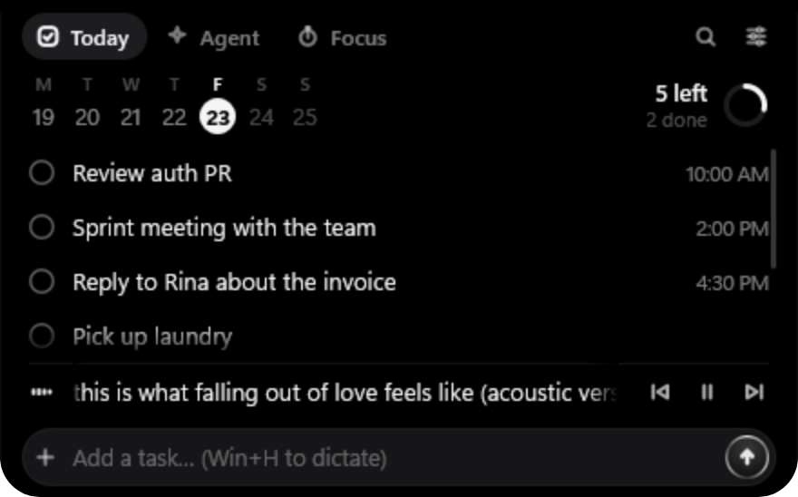
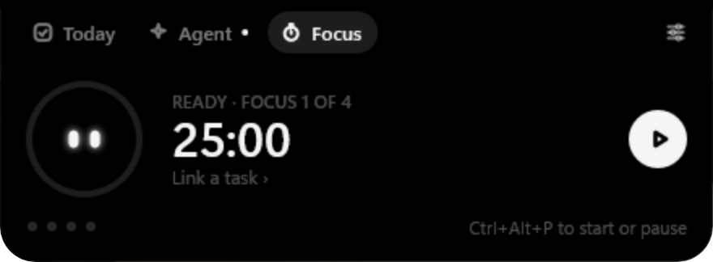

A tiny dynamic island for Windows.
Your day and your AI agent, in one small black pill at the top of your screen. Tasks, focus, music and shortcuts, plus a live view of what Claude Code is doing, with approvals you answer right from the notch.
Launching Oct 30, 19:00 WIB · Out now — see Releases →
On GitHub, choose Watch → Custom → Releases to get notified.
For people who work with AI agents
Connect your agent.
Claude Code reports to tini through hooks, so you can watch it work and answer it without leaving the window you're in. Any agent that speaks MCP can use tini too.
See what it's doing
Live activity at the top of your screen: “Editing auth.ts”, “Running tests”. When it's done, a chip with a Review button. The Agent tab lists every session and your Claude 5-hour and weekly quota.
Approve without alt+tab
A permission request becomes a card with the exact command, ✕ and ✓, and an amber countdown. tini never approves anything on its own; if you don't answer, Claude falls back to its own dialog.
Try it: allow or deny.
Answer its questions
Multiple-choice questions and plan approvals become buttons in the notch. Want to type a free answer instead? “In app” sends it back to the chat.

Claude Code, Codex, Gemini CLI, Cursor, and any MCP agent
Run notch-bridge mcp as an MCP server and your agent can notify you, ask a quick question, request approval before something risky, report progress, and add or tick off your tasks. It works in the Claude desktop app's chat too. Agents can't answer their own cards or read your clipboard.
notifyask_userrequest_approvalprogressadd_taskcomplete_taskget_statusProductivity
Everything you glance at, in one pill.
Type your day like you talk
“review PR, then team meeting at 2pm tomorrow” becomes two tasks with the right times. English and Indonesian, no AI, no account. Press Win+H to dictate instead.

Your own Stream Deck
Buttons for apps, key combos, commands and text snippets. Drag any app onto the notch to add it. Ctrl+Alt+1…0 runs them without opening tini.
Pomodoro in the notch
Ctrl+Alt+P starts a focus session. A small ring and the minutes left stay in view, and Nochi squints calmly while you work.

One shortcut for everything
Ctrl+Alt+N opens a command bar: apps and folders, timers like 25m review PR, quick sums, a new Claude Code session, a web search, or just a task.
Now playing
Spotify, YouTube or any player that uses Windows media controls. A small equalizer while music plays; hover for the title and prev / play / next.
Smart chips: one next step
Copy a link or a screenshot, or finish a download, and the pill offers the obvious next step: open, copy again, save as PNG, add as a task, show in folder. Content that password managers mark as private is never read.

Widgets
Prayer times calculated offline with the Kemenag method, with a soft chime or the full adhan. Clipboard history of your last copied texts, kept in memory only. Each widget can be switched off.
Meet Nochi
Two glowing eyes that live in the notch. They blink, follow your cursor, read along while your agent works and hop when you finish something. Hover to make Nochi smile, click to make it hop.
Never in the way
Three sizes: Shy, Compact and Full. It peeks under maximized windows, hides in fullscreen games and presentations, and stays on the monitor you put it on.
Performance
So light you'll forget it's running.
Native Rust on Win32 and Windows.UI.Composition. Animations run in DWM, the compositor that already draws your desktop, so tini itself mostly sleeps. Nothing polls.
of RAM in daily use · 0% CPU when idle
| Name | CPU | Memory |
|---|---|---|
| tini in daily use, idle | 0% | 13 MB |
Installed release build on a Core i3-10105F, in daily use. “Memory” is Task Manager's Memory column (private working set). It stays under 15 MB.
Settings
Make it yours.
Launch
Launching Oct 30.
The first release goes out on October 30 at 19:00 WIB. Watch the repo on GitHub and you'll get a notification the moment it's out.
On GitHub, choose Watch → Custom → Releases to get notified.
What you'll get
- A small installer for Windows 11, 64-bit (Windows 10 may work)
- Installs for your user only, no admin needed
- Free and open source, MIT or Apache-2.0
- Under 15 MB of RAM in daily use
Why you can trust it
Open source
Every line is on GitHub under MIT or Apache-2.0. Read it, build it yourself, or ask your agent to review it.
Built in public
Releases will be built by GitHub Actions from the public source, in the open, so you can see exactly what goes into every download.
Yours to remove
Installs for your user only: no admin, no service, no driver. Your tasks and settings stay in plain files on your PC.
Privacy
Local-first. No account, no analytics.
Your data stays on your PC
Tasks, Deck buttons and settings are plain files in %APPDATA%\Notch. No account, no telemetry, no update check.
Claude quota, only to Anthropic
To show your 5-hour and weekly limits, tini reads Claude Code's login token from ~/.claude/.credentials.json into memory and sends it only to Anthropic (api.anthropic.com, and platform.claude.com to renew an expired token). It's never logged.
Keyboard and mouse
Global keyboard and mouse hooks are active only while the panel is open, so tini can close it when you click elsewhere or press Esc.
Clipboard
Read only for links and images (and recent texts for the optional history), never content marked private by password managers, and not at all when Smart chips are off. History lives in memory only.
Location, only when you ask
Prayer times are computed offline. “Use my location” asks Windows for your position once, only when you click it, and the coordinates stay in your settings file.
Agent events stay local
Claude Code hooks send short event summaries to tini over a named pipe that only your Windows user can open. Never over the network.
FAQ
Questions
Is it free?
Yes. Everything tini does today is free and open source, forever. A Pro version may come later, but it will only add new features; nothing that's free now will move behind a paywall.
Which agents does it work with?
Claude Code gets the full experience through hooks: live activity, permission and question cards, plan approval and quota meters. Any MCP-capable agent (Codex, Gemini CLI, Cursor, the Claude desktop app's chat, …) can notify you, ask questions, request approval, report progress and manage tasks.
Will it slow down my PC?
No. In daily use it stays under 15 MB of RAM and sits at 0% CPU when idle, and animations run in Windows' own compositor. See the numbers above.
Does it need the internet?
No. The only network request is the optional Claude quota meter, which talks to Anthropic. Prayer times are calculated offline.
When can I download it?
On October 30 at 19:00 WIB. Watch the repo on GitHub (Watch → Custom → Releases) or follow @iamsetiaji_ on Threads to hear the moment it's out.
Does it work on Windows 10?
It's built and tested on Windows 11. The installer also runs on Windows 10 (version 1809 or later), but that isn't tested yet.
Is this the Docker tool called tini?
No. This tini is a notch for Windows. krallin/tini is an unrelated init process for containers that happens to share the name.
Why are the files called notch.exe?
tini was developed under the name “Notch”, so the binaries and the settings folder still use that name.
Support
Like tini? Help keep it free.
tini is made by one person in his spare time. A coffee, a star on GitHub or a bug report all help.
“I built tini because I wanted to see what my AI agent was doing without alt-tabbing, and Windows didn't have a notch. It started as a two-day prototype with Claude Code. If it makes your day a little smoother, that's all I hoped for.”Dimas Setiaji · @iamsetiaji_